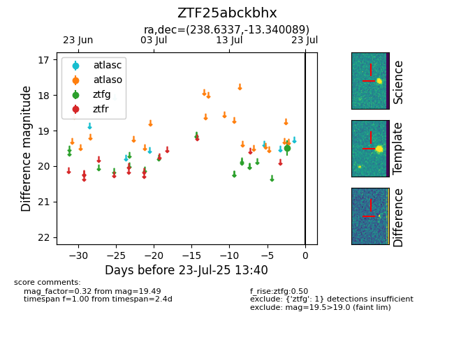

Target ZTF25abckbhx at 2025-07-23 13:40, see:
FINK: fink-portal.org/ZTF25abckbhx
Lasair: lasair-ztf.lsst.ac.uk/objects/ZTF25abckbhx
ALeRCE: alerce.online/object/ZTF25abckbhx
alt names
ZTF25abckbhx (ztf,fink)
coordinates:
equatorial (ra, dec) = (238.6337,-13.34009)
galactic (l, b) = (356.4923,+29.92044)
photometry
last ztfg=19.49
1 ztfg detections
